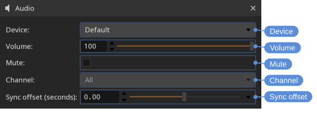

Audio
DJV plays multi-track audio in sync with video, including during variable-speed and reverse playback. Audio can come from a movie file, or be paired with an image sequence (see Files).
Volume and mute
Volume and mute are available from the Audio menu, the speaker control in the Bottom tool bar (click to show the volume slider and mute button), and the Audio tool. The speaker icon changes to show when the audio is muted.
Shortcuts:
- Volume up — Period
- Volume down — Comma
- Mute — M
Audio tool
The Audio tool gives fine-grained control over audio output.
Locations: Tools menu, Tools toolbar
Shortcut: F8

- Device — The audio output device. Default uses the system default device.
- Volume — Output volume, from 0 to 100.
- Mute — Mute all audio output.
- Channel mute — Mute individual channels. For stereo files the channels are labelled L and R; files with more channels are numbered.
- Sync offset (seconds) — Shift the audio earlier or later relative to the video, from -1.0 to 1.0 seconds. Use this to correct material where the audio and video are out of sync.
When a non-zero sync offset is set, a status bar indicator is shown as a reminder.